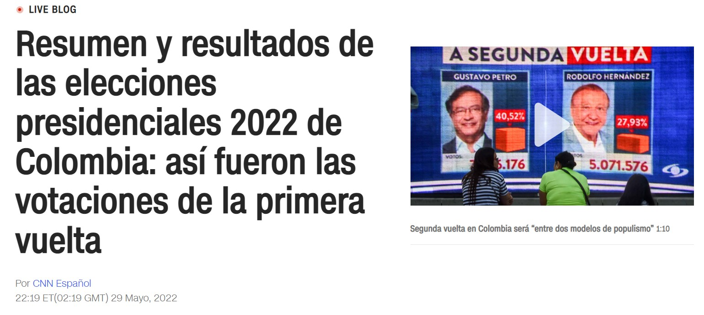
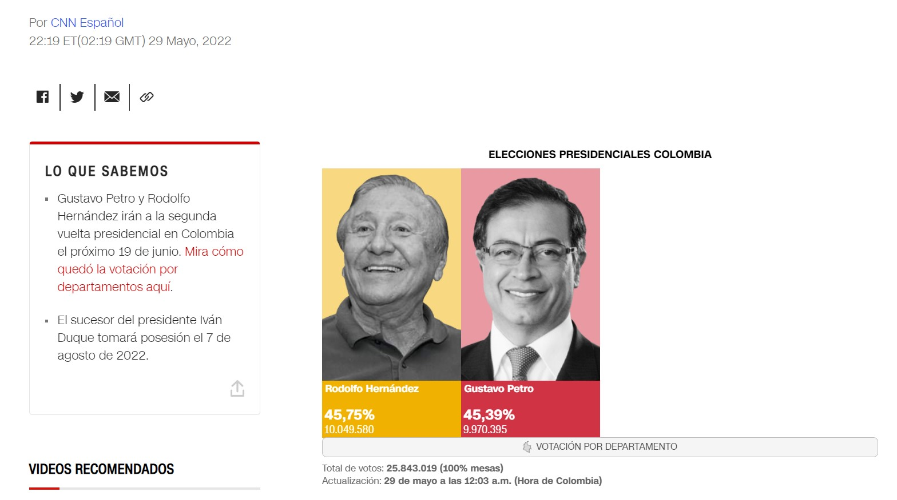
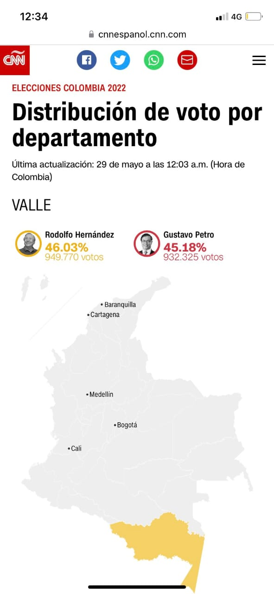

¿Datos simulados de la segunda vuelta de elecciones presidenciales en Colombia 2022?
¿Qué relación tiene la supuesta simulación con los datos que aparecieron (y luego removieron) en la página de CNN en español?
Desde la cuenta del candidato Gustavo Petro se mostraba un supuesto video la registraduría de presentación de resultados que reportaba al candidato Hernandez como ganador días antes de que se llevaran acabo los comicios.
Que explique la Registraduría pic.twitter.com/gA46Acyywe
— Gustavo Petro (@petrogustavo) June 18, 2022
Mientras la discusión en la redes se centraba en denunciar un posible fraude por parte de los afiliados a las lineas petristas, y explicar que puede ser un simulacro por parte de la registraduría según los afines al ingeniero RH, cuentas denunciaron quela página de CNN en español también estaban reportando una información similar que fue removida en la mañana del sábado 18 de Junio 2022.
La página de CNN en español presentaba en su artículo titulado "Resumen y resultados de las elecciones presidenciales 2022 de Colombia: así fueron las votaciones de la primera vuelta" una infografía que pareciera deber mostrar los resultados de la primera vuelta de las elecciones, pero su imagen solo refleja resultados sobre Gustavo Petro y Rodolfo Hernandez. Dicha imagen presenta a Rodolfo Hernandez en primera posición con un total de 10'049.580 votos y un 45,75% del escrutinio frente a unos 9'970.395 votos del candidato Gustavo Petro que representaban un 45,39% de la votación. La imágen muestra que en efecto, esta publicación data del 29 de mayo, lo que coincidiría con la presentación de resultados de la primera vuelta.
Al dar clic sobre el vínculo para ver resultados por departamentos, el mapa de Colombia aparecía. Al pasar el puntero por las diferentes regiones del pais, la página desplegaba la información de resultados nuevamente poniendo únicamente a los candidatos que pelean la presidencia en segunda vuelta este domingo.
Supuestos resultados en Valle
Supuestos resultados en Santander

¿Qué pudo pasar?
Lo primero a destacar es que no hay manera de verificar la fuente del video publicado por el candidato Gustavo Petro. La presentación, aunque cuenta con logos de la registraduría, no tiene suficiente información para constatar su veracidad. Sin embargo, no ocurre lo mismo con la página web de CNN que es de libre acceso y a la que varios internautas accedieron.
Algunos usuarios de Twitter teorizan que era un simulacro. Esto resulta poco probable. Primero, la publicación de la herramienta interactiva que presenta la información de las votaciones esta puesta sobre un artículo anterior, que hablaba sobre la primera vuelta. No hay motivo aparente para dañar una publicación de hace semanas por un simulacro. Por otro lado, este tipos de pruebas no se realizan sobre las páginas que son accesibles para usuarios. Normalmente, los desarrolladores web cuentan con copias de páignas de prueba que son inaccesibles por los usuarios para realizar estos simulacros. Una vez todo funciona, se despliega sobre la página final.
¿Entonces?
Lo que causa curiosidad es que los datos presentados por CNN sean similares a los presentados en el video que postea GP. Previo a que CNN removiera esta información de su página web, he descargado los datos y los he comparado con lo que se con dificultad se puede ver sobre el video.
En primer lugar, la cantidad de votos y los porcentajes en ambos casos son los mismos. En el minuto 0:08 del video se puede contar 21 departamentos en los que RH es ganador y 13 en los cuales Petro sobrepasa al ingeniero. Esta información coindice con la información presentada por CNN.
Desde mi profesión y experiencia como Ingeniero de Sistemas, si intentara adivinar diría que la página de CNN se alimenta de la información de la registraduría. La registraduría cambió la información almacenada sin mucho cuidado y esta actualización de datos se tradujo en una actualización de la información presentada en CNN.
Me parece lo más lógico toda vez que al inspeccionar lá pagina web de CNN y su tráfico, puede verse que el sistema interactivo se actualiza con la información recibida. El sistema está programado para hacer una petición de información a un servidor, y al recibirla desplegar esos datos. Cuando recibía la información correspondiente de la primera vuelta la desplegaba. La página empezó a recibir otra informaci+on y sin hacer distinción solo la desplegó.
Esta información viene de un servidor CNN como se puede constatar en el tráfico de datos de la página. Yo teorizaria que este servidor a su vez de manera automática recibe la información de la registraduría. Aunque puede que el cambio haya sido en CNN unicamente, veo poco probable que cambien información en una publicación antigua. Dejo adjunto los datos que CNN publicó pero que removieron posteriormente. Al ver que la registraduría cambió los datos y estan presentando información incompatible con su artículo, quitaron esta parte de la pàgina.
El verdadero punto a discutir, es ¿cuál es el fin del cambio de esos datos? ¿era una simulación de la registraduría?
Update: 11:23
CNN admite error al no desmontar su widget que connectaba directamente a la página de la registraduría y quien había dicho que realizarían pruebas. Link aquí
SIN EMBARGO, deja muchas dudas que fue la registraduría en su twitter quien afirmó que no se realizan simulaciones. ¿Quién dice la verdad?
Ante la publicación de videos e imágenes donde aparecen cifras previas a la votación de la segunda vuelta de la elección presidencial, la Registraduria Nacional del Estado Civil informa que la entidad no hace simulacros ni proyecciones estadísticas sobre resultados.
— Registraduría Nacional del Estado Civil (@Registraduria) June 18, 2022
Datos de supuesto simulacro
| Departamento | Total votos Petro | % Petro | Total votos Rodolfo | % Rodolfo |
|---|---|---|---|---|
| AMAZONAS | 13266 | 43,57 | 13833 | 45,43 |
| ANTIOQUIA | 1301193 | 45,39 | 1316518 | 45,92 |
| ARAUCA | 56147 | 46,51 | 54547 | 45,18 |
| ATLANTICO | 497705 | 44,56 | 517480 | 46,33 |
| BOGOTA D.C. | 1515804 | 45,99 | 1488811 | 45,17 |
| BOLIVAR | 432370 | 45,45 | 431815 | 45,4 |
| BOYACA | 257080 | 45,84 | 256634 | 45,76 |
| CALDAS | 207243 | 44,95 | 211951 | 45,97 |
| CAQUETA | 78071 | 44,17 | 81822 | 46,3 |
| CASANARE | 79628 | 45,83 | 78874 | 45,4 |
| CAUCA | 267327 | 45,11 | 272023 | 45,9 |
| CESAR | 228542 | 46,5 | 219617 | 44,69 |
| CHOCO | 86677 | 44,87 | 89078 | 46,11 |
| CONSULADOS | 245747 | 45,15 | 250481 | 46,02 |
| CORDOBA | 350937 | 45,95 | 345426 | 45,23 |
| CUNDINAMARCA | 539516 | 45,21 | 547766 | 45,9 |
| GUAINIA | 8421 | 44,43 | 8732 | 46,07 |
| GUAVIARE | 17139 | 46,23 | 16913 | 45,62 |
| HUILA | 225878 | 45,29 | 230490 | 46,22 |
| LA GUAJIRA | 166504 | 45,75 | 164370 | 45,16 |
| MAGDALENA | 266483 | 45,71 | 264424 | 45,36 |
| META | 199311 | 45,21 | 199800 | 45,32 |
| NARIÑO | 309230 | 45,41 | 310611 | 45,62 |
| NORTE DE SAN | 325774 | 44,93 | 333974 | 46,06 |
| PUTUMAYO | 62684 | 45,1 | 64151 | 46,15 |
| QUINDIO | 121422 | 44,05 | 128823 | 46,74 |
| RISARALDA | 216105 | 45,95 | 212343 | 45,15 |
| SAN ANDRES | 13605 | 45,93 | 13350 | 45,07 |
| SANTANDER | 455190 | 45,43 | 457151 | 45,62 |
| SUCRE | 191053 | 45,01 | 196624 | 46,32 |
| TOLIMA | 282452 | 44,32 | 300923 | 47,22 |
| VALLE | 932325 | 45,18 | 949770 | 46,03 |
| VAUPES | 5435 | 42 | 6464 | 49,95 |
| VICHADA | 14131 | 45,78 | 13991 | 45,32 |